Was in Washington wirklich gesagt wurde.
Lange Ausschnitte aus Kongress, Senat und Weißem Haus – im Originalton, auf Deutsch eingeordnet. Was Trump verspricht, was er tut und was das für Deutschland und Europa bedeutet.
Neueste Folge
„ACH, KOMMT SCHON“ – Senator Tillis widerspricht Vance live bei CNN
„Wir haben sie verloren“, sagt Senator Thom Tillis in der Wahlnacht über seine eigene Partei. Seitdem zeigt in Washington jeder auf jemand anderen. Wir legen die Antworten nebeneinander und fragen, auf wen keiner zeigt.
Auf YouTube öffnenDas Video wird erst nach dem Klick von YouTube geladen.
Alle Folgen
Jeden Tag eine neue Akte.
„ACH, KOMMT SCHON“ – Senator Tillis widerspricht Vance live bei CNN
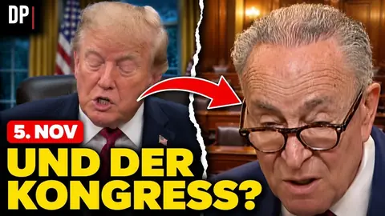
6. Nov · Iran„ICH WEISS NICHT, OB ES EIN KRIEG IST“ – Trump zwei Tage nach der Wahl
6. Nov · Diesel-Deal„DANN IST ES WOHL EIN ZIEMLICH SCHLECHTES GESETZ“ – Trump zum Diesel-Tanker
5. Nov · Nach der Wahl„LAWYER UP“ – Garcias X-Post nach der Wahl: Nehmt euch einen Anwalt
5. Nov · Nach der Wahl„DER PREIS, NICHT DER KRIEG“ – Trump zu Vances Satz über die Niederlage
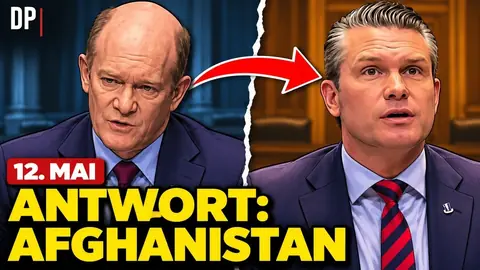
5. Nov · US-Truppen„WAS IST DER STRATEGISCHE GRUND?“ – Coons zu 5.000 Soldaten in Deutschland
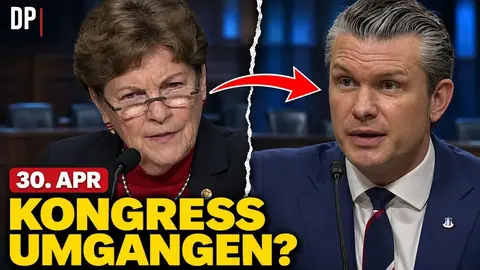
4. Nov · Ukraine„ABER DAS WAR NICHT DER WILLE DES KONGRESSES“ – Shaheen zu Hegseth, 30. April
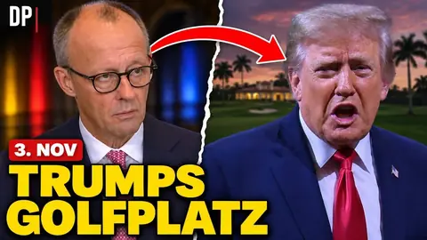
4. Nov · G20 Miami„JEDEM GASTGEBER STEHT ES FREI“ – Merz zu Putin und Selenskyj in Miami
4. Nov · Wahlergebnis„ICH STAND NICHT AUF DEM STIMMZETTEL“ – Trump nach der verlorenen Midterm-Wahl
3. Nov · Zwischenwahlen„EIN UNGEHOBELTER, FURCHTBARER MENSCH“ – Trump am Tag nach der Wahl 2018
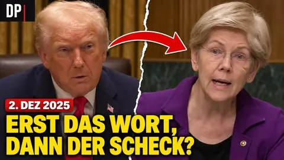
3. Nov · Preise„BETRUGSNUMMER DER DEMOKRATEN“ – Trump, die Midterms und die 5.000 Dollar
3. Nov · Wahltag„IM GRUNDE STEHE ICH AUF DEM STIMMZETTEL“ – Trump, der Wahltag und Europa
2. Nov · Iran„IN ZEHN MINUTEN“ – Trump, der Iran und der Morgen nach der Wahl
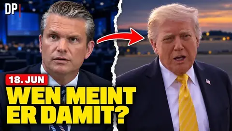
2. Nov · Raketen„ES WAR BESCHÄMEND“ – Hegseth, Trump und Deutschlands Raketenlücke
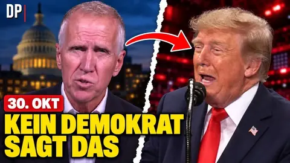
2. Nov · Zwischenwahlen„DAS REPRÄSENTANTENHAUS IST VERLOREN“ – Trumps Parteifreund Tillis
1. Nov · Patriots„WIR BRAUCHEN SIE AUCH SELBST“ – Trump und die 500 Patriots für Kiew
1. Nov · Russland„WIR SIND BEREIT“ – Putin zu Europa, Washington prüft seinen Fonds
1. Nov · FBI„LÜGENTHEATER“ – FBI-Chef Patel unter Eid, zwei Tage vor den Midterms
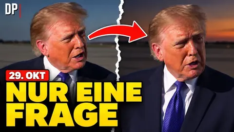
31. Okt · Pressefreiheit„SIE SIND KRANK“ – Trump zu einem Reuters-Reporter nach der Kansas-Frage
31. Okt · Ukraine„ER SOLL VERDAMMT NOCH MAL AUFHÖREN“ – Trump will Kiews Drohnen bremsen
31. Okt · Katar-Jet„ZWEI WORTE: DANKE“ – Trump über den 747-Jet aus Katar
30. Okt · Iran„DASS WAHRSCHEINLICH AMERIKANER GETÖTET WERDEN“ – Senator Murphy warnt vor neuem Iran-Krieg
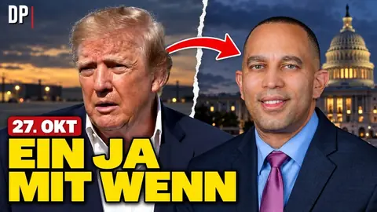
30. Okt · Zwischenwahlen„WENN DIE WAHLEN EHRLICH SIND“ – Trump vier Tage vor den Midterms
30. Okt · Ukraine„SEHR BALD“ – Trump verspricht Putin-Selenskyj-Treffen, ohne Termin
29. Okt · Zwischenwahlen„ÜBERALL GOLD“ – Obama über Trumps Weißes Haus, kurz vor den Midterms
29. Okt · Ukraine„DIE EUROPÄISCHE UNION HÄTTE BEZAHLT“ – Trump über den Ukraine-Krieg
29. Okt · Starlink„SCHÄMEN SOLLTE SICH, WER VERANTWORTLICH IST“ – Tillis zu Starlink
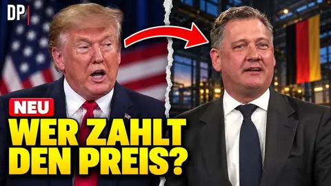
28. Okt · Audi„NOCH NICHT GEFALLEN“ – VW-Aufsichtsrat Lies zum Audi-Werk
28. Okt · Wirtschaft„INFLATION IST 1,7 PROZENT“ – Trump. Die Statistik sagt 3,7
27. Okt · Iran„DAS IST NICHT UNSER KRIEG“ – Pistorius im März. Und Ramstein?
27. Okt · Ukraine„WIR HABEN ALLE KARTEN“ – Trump zu Selenskyj. Und Deutschland?
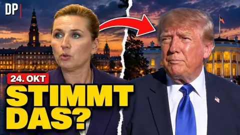
27. Okt · Grönland„SIE HABEN UNS GRÖNLAND GEGEBEN“ – Trump in Georgia. Stimmt das?
26. Okt · AfD„MIT DEN STARKEN FREUNDEN IM AUSLAND“ – von Storch bei Bannon
26. Okt · Ukraine„OHNE MEIN EINGREIFEN … UNMÖGLICH“ – Melania Trump zur Waffenruhe
26. Okt · NATO„UNSERE NATO-VERBÜNDETEN WÄREN DIE NÄCHSTEN“ – Republikaner Cornyn über Putin
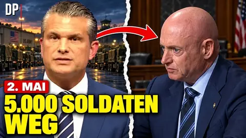
25. Okt · US-Truppen„DANN IST DAS IHRE SCHULD“ – Hegseth, 5.000 US-Soldaten verlassen Deutschland
25. Okt · Iran„FÄLLT WIE EIN STEIN“ – Trumps Ölpreis-Versprechen und unser Diesel
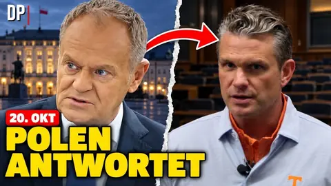
25. Okt · NATO„DAMIT NIEMAND MEHR KLEINREDET“ – Tusk nach Hegseths Afghanistan-Rede
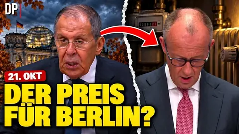
24. Okt · Nord Stream„SIE MÜSSEN FÜR DIE UKRAINE STERBEN“ – Lawrow über Merz und Nord Stream
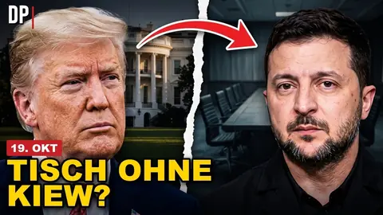
24. Okt · Ukraine„OB JEMAND DA IST ODER NICHT“ – Trump zum Gipfel ohne Selenskyj
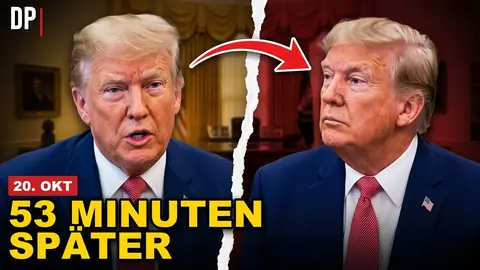
24. Okt · Pressefreiheit„SIND SIE EIN KRANKER MENSCH?“ – Trump vor Reportern im Oval Office
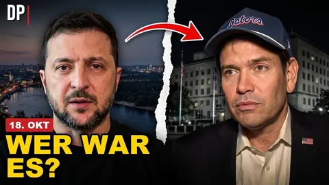
23. Okt · Starlink„WER HAT DIESE ENTSCHEIDUNG GETROFFEN?“ – Selenskyj zur Starlink-Drossel
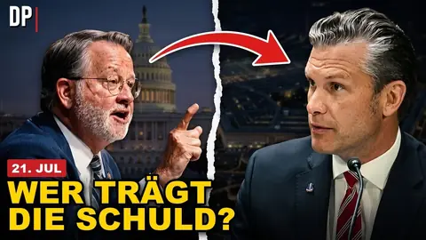
23. Okt · Iran„SIE, SIR, SIND DAS VERSAGEN“ – Senator Peters zu Hegseth
23. Okt · Europa„DAS HABE ICH DEUTSCHLAND GESAGT“ – Trump und die Soldaten
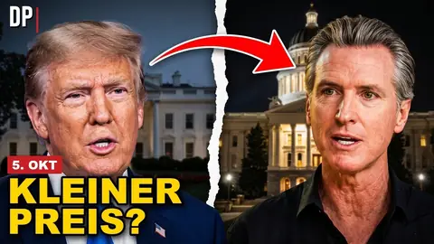
22. Okt · Kalifornien„LASST SIE LOS ANGELES AUSSCHALTEN“ – Trump gegen Newsom
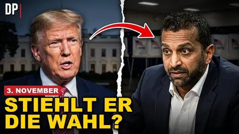
22. Okt · Zwischenwahlen„ICH WEISS NICHT, OB WIR DAS RECHTLICH NICHT DÜRFEN“ – Patel: FBI an die Wahllokale?
22. Okt · Russland„ICH MÖCHTE PRÄSIDENT PUTIN DANKEN“ – Trump und der Diesel-Deal
Zu diesem Thema gibt es noch keine Folge.
So arbeiten wir
Vom Originalton zur Folge.
- 01
Quelle
Wir suchen die Aufnahme selbst: Anhörung, Pressekonferenz, Kundgebung. Nicht die Zusammenfassung.
- 02
Einordnung
Was wurde gesagt, was vorher versprochen, was danach beschlossen? Mit Datum und Quelle.
- 03
Faktencheck
Jedes Zitat wird mit dem Transkript abgeglichen, jede Zahl mit ihrer Quelle. Was nicht belegt ist, sagen wir so.
- 04
Die Folge
Originalton mit deutschen Untertiteln, dazu die Frage: Was heißt das für Deutschland und Europa?
Unsere Grundsätze
Meinung ja. Erfindung nie.
Jedes Zitat ist echt. Jede Zahl hat eine Quelle.
- Zitate werden nicht gekürzt, bis sie etwas anderes sagen.Jeder Ausschnitt wird Wort für Wort mit dem Transkript abgeglichen – auch die deutsche Übersetzung.
- Fakten und Kommentar sind getrennt.Wir haben eine Haltung und sagen das offen. Aber was wir als Tatsache zeigen, ist belegt.
- Keine Beleidigungen, keine erfundenen Bilder.Harte Kritik ja – Spitznamen, KI-Fälschungen und unbelegte Vorwürfe nein.
- Fehler werden korrigiert.Wenn uns ein Fehler unterläuft, korrigieren wir ihn sichtbar in der Videobeschreibung.
Keine Folge verpassen.
Abonniert den Kanal und aktiviert die Glocke. Kurze Ausschnitte gibt es auf Facebook.